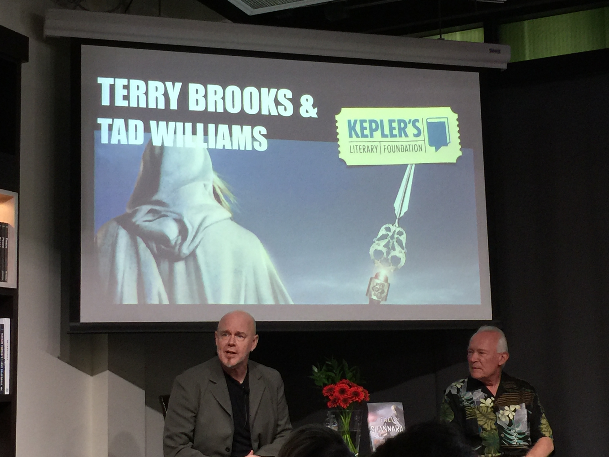

 - fiction is about leaving enough space for the user to apply her imagination - reading is a very engaging activity between the writer and the reader - fiction allows you to write about the real world without having to exactly mirroring it - America is an extremely polarized country. Same theme elicits different responses - the writer needs to be able to step out of his own perception into another perception that might be opposed - once books gets turned into show sales of books go way through the roof - to only focus attention on things you have control of - works building happens in the background through a process of collecting random thoughts - JRR Tolkien spent 40-50 years working on the lord of the rings - process changes as time in life stage changes - daily circadian rhythm dictates the writing schedule mornings used for writing - science and magic are symbolism of power - more stimulated by reading outside the field - start by reading within the field and understand what works - then sent over by the editor or if knows the author - wants to read book that impacts us in a meaningful way - power results in a lot of decision that needs to be made night and day. Causes a lot of aging really fast - doing something for fun feels quite different from working full time - writing is like raising a child. You raise them and then send them out into the world to make money - if I can’t write a scene I need to - if I can find an answer within 10 questions then it’s probably not worth writing - need to think about an idea till invested before committing to it - it’s like a survival of the fittest with ideas in the head - make sure to marry and partner with the right person. It’s unbelievable what they have to deal with
{kind=link}